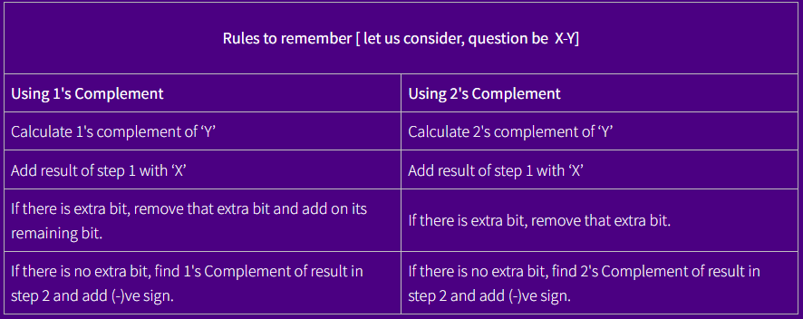

Number system
1's and 2's Complement
1's Complement: Reciprocal of 1s to 0s and 0s to 1s is its 1's complement. For eg, 1's Complement of (1011)2 is (0100)22's Complement: Adding 1 to the 1's complement of a given binary number is its 2's complement. For eg, if (1010)2 is a given number then, its 1's complement is (0101)2 and 2's complement is (0101)2 +(1)2 = (0110)2 
Boolean Logic
Boolean Algebra is algebra of logic, which deals with the study of binary variables and logical operation. As every data are represented in terms binary values, we need to manipulate those values by using some certain rules and expression which we can do through Boolean algebra. It is most common and basic method to analysis and design logic circuit. It was introduced by an English mathematician George Boole. In Boolean algebra the variables can have only one of the two possible value 0 and1 (False or True). Every modern digital computers understand either this two values.Boolean algebra: It is algebra of logic which could accept either of the possible two values 0 and 1 and generate a result through logical relationship and operation.
Boolean variable: Those entities which has either or 0 and 1 and denote some specific operation ore known as boolean variable. Simply, it is an entity in Boolean algebra which has only either of the two possible values. This variable are denoted by A, B, P, Q, X, Y, Z….
Boolean function (logic functions): Boolean function is an expression formed by binary variables, binary operators such as AND, OR, NOT, parentheses, and equal sign for a given set of value this boolean function gives the 0 or 1 as a result.